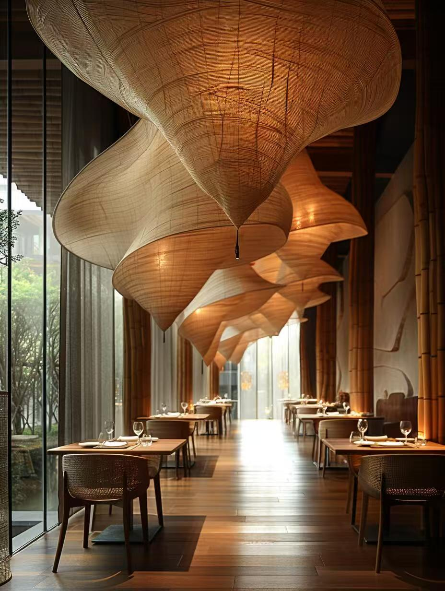
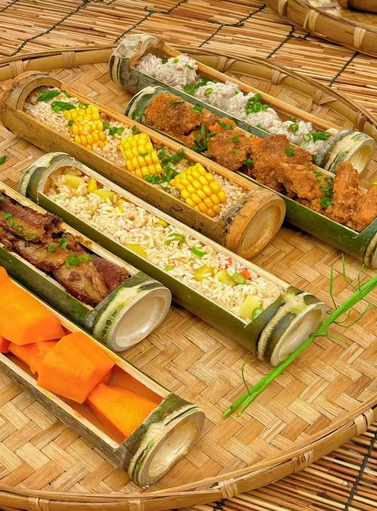

竹韵餐厅
步入竹韵餐厅，仿若踏入一处清幽雅致的竹林秘境。餐厅以“竹”为魂，将传统竹编文化与现代美学深度融合，从竹制的雕花门窗、竹编吊灯，到墙面装饰的竹影画，再到餐桌摆放的竹制餐具，每一处细节都散发着浓郁的东方韵味，营造出宁静、古朴又不失时尚的用餐氛围。
在这里，美食同样传承竹之精髓。厨师团队巧妙运用竹元素，打造出一系列特色菜品。以竹筒为器，盛装鲜嫩的竹筒饭，米饭吸收竹子清香，软糯可口；用竹网烤制的各类食材，不仅锁住原汁原味，还增添一缕独特竹香；还有融入竹笋、竹荪等食材的佳肴，更是将自然风味展现得淋漓尽致。每一道菜都精心雕琢，色香味俱全，既满足味蕾享受，又带来视觉盛宴。
除了美食，竹韵餐厅还注重用餐体验。服务员身着带有竹纹元素的服饰，举止优雅，热情周到，为顾客提供贴心服务。餐厅设有不同类型的用餐区域，无论是家庭聚餐、朋友小酌，还是商务宴请，都能找到合适的空间。在竹影摇曳、竹香萦绕中，让顾客远离喧嚣，放慢脚步，尽情享受美食与自然交融的美好时光。竹韵餐厅，不仅是品味美食的场所，更是感受传统文化魅力、放松身心的理想之地。